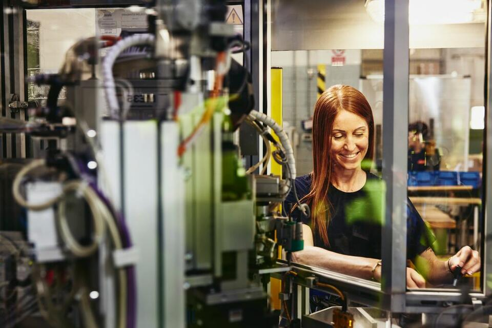

why the future success of the automotive industry will depend on its workforce
By Yvette Rogier

From the proliferation of electric vehicles (EVs) to the development of self-driving cars and increasingly stringent emissions standards, a number of trends are forcing automakers to not only redefine their business,
but rethink the entire concept of transportation.
The automotive industry has also faced some distinct economic and commercial challenges in recent years. Sales began to decline in 2018, a trend that has been extended by the lingering effects of the pandemic.
In 2023, inflation and fuel-supply issues stemming from the Russian invasion of Ukraine continue to affect consumer demand and industry growth.
For businesses in the automotive sector, succeeding in today's environment will require new skill sets and ways of working,
which should be reflected in your talent acquisition strategy.
market challenges shaping the automotive industry outlook 2023
Automakers and other companies in this industry have certainly had their fair share of obstacles to overcome in recent years.
According to the International Energy Agency (IEA), total global car sales declined from 92 million in 2018 to 88 million in 2019.
As COVID-19 swept the globe, this figure dropped to 73 million in 2020. Sales rose by 4.5% in 2021, according to Scotiabank, and remained flat in 2022.
There have been specific regional trends emerging during this time. After the invasion of Ukraine, Western sanctions caused Russia's auto market to plummet; sales were down by 74.9% in July 2022, with no hope of recovery in sight.
In the United States, a lack of inventory, ongoing supply chain issues and rising inflation pushed up new-car prices by 6.3% in 2022. The used-car market was particularly hard-hit — prices rose by 42.5% between February 2020 and September 2022.
In the years since slow auto sales contributed to a 2019 economic contraction in Germany, the country's automotive industry has rebounded slightly. It's expected to contract again in 2023, spurred in part by rising fuel costs.
India's auto market, which experienced a precipitous drop in sales even before the pandemic, has failed to rebound in the face of supply chain disruptions, the ongoing semiconductor shortage and rising commodity prices.
For businesses, market conditions like these will give rise to a number of urgent questions, many of which will relate to the workforce. When you're faced with a challenging industry environment and economic factors that are likely to hinder customer demand,
you need to be sure you're doing everything you can to maximize cost efficiency in HR.
Furthermore, it becomes more important than ever to optimize recruitment so you're acquiring high-quality talent and making sound hiring decisions that give your business the best chance of succeeding in difficult conditions.
Consider steps you could take to streamline your hiring workflow, such as the interview stage. Ask what you might have to gain from increasing diversity and accessing specialist talent in the contingent workforce.
what is the future of the automotive industry?
Following the challenges of recent years, auto manufacturers and other businesses in this sector will be looking to the future and taking action to stay ahead of the technological curve.
Encouragingly, there have been forecasts for modest sales growth in 2023 and full recovery in the next few years. It's almost certain that the industry will see ongoing expansion in the EV segment,
as well as continued development of technologies and systems that could revolutionize business processes, particularly in areas like AI.
Trends such as these will provide exciting opportunities for existing businesses and new enterprises.
Companies that can optimize recruitment and acquire technically skilled talent will be well-positioned for growth.
growth prospects
Experts predict that global auto sales will need 1 to 3 more years to rebound from the pandemic, economic challenges and the fuel crisis. Forecasts from the Economist Intelligence Unit (EIU) suggest that sales of new vehicles will increase by 0.9% in 2023.
However, since sales of commercial vehicles are expected to drop by 1.3%, overall sales will remain largely unchanged from 2022. The EIU cited continuing supply chain issues and global fuel challenges, as well as diminished demand due to inflation and an anticipated European recession.
LMC Auto shared a slightly more optimistic projection, suggesting that light vehicle sales would increase slightly in 2023. The firm predicts that the semiconductor shortage and low inventory levels will ease over the course of the year, which may help bring down prices.
However, LMC Auto's forecasters don't expect a return to pre-pandemic sales levels until 2024 or later.
Taking a more long-term view, McKinsey has said the auto industry should recover fully by the middle of the decade, led by China and India. The company believes that increased interest in clean mobility and advancements in electric vehicles will disrupt the industry across the world.
Autonomous driving is also expected to create shifts in the market by 2030 as costs drop and the technology becomes more sophisticated.
To make the most of growth opportunities in the coming years, you will need to optimize your workforce by moving talent into, within and out of your organization.
It is important to manage these transitions thoughtfully and empathetically by offering outplacement services – and protect your employer brand (which in turns protects your ability to hire great talent).
the shift towards EVs
Another key trend in the automotive industry is the steady transition away from internal combustion engines and towards electric motors.
The shift to EVs will give rise to new skills requirements for businesses.
The EU is planning to force auto manufacturers to reduce emissions completely by 2035, effectively prohibiting the sale of new gas-powered vehicles.
Canada and some U.S. states are making similar moves, indicating that the future of automotive manufacturing is electric.
Research by the IEA shows that electric vehicle sales grew to 6.6 million in 2021. Growth was particularly significant in Europe, where sales grew by 65%, and China, which saw EV sales triple.
In 2022, the IEA expects EVs to account for about 13% of all vehicle sales. Thanks to EV-friendly policy changes and changes in carmaker lineups, this growth is expected to continue — though it may be tempered by high lithium prices, lockdowns in China and the effects of the Russian invasion in Ukraine.
Fatih Birol, executive director of the IEA, said, 'Few areas of the new global energy economy are as dynamic as electric vehicles.
The success of the sector in setting new sales records is extremely encouraging, but there is no room for complacency.'
This shift away from petrol and diesel vehicles in favor of EVs will undoubtedly have an impact on automakers and their workforces.
The German auto industry, which has long been anchored by the internal combustion engine, has been slow to respond.
As a result, the ifo Institute predicts that the ensuing job losses will outstrip the number of retiring baby boomers.
In the United Kingdom, the Social Market Foundation predicts that Britain will have a shortfall of 25,000 EV mechanics by 2030.
As EV production and adoption accelerates, auto industry businesses will need to acquire talent with relevant skills.
Companies need employees who can design, produce, test and evaluate new products in the fast-moving electric market. Recruitment will play a vital role in the transition, but given the global labor shortage, it's also important to consider reskilling your workforce. Company-sponsored training can ease hiring pressures and help your business meet new market demands, all while boosting employee morale and job satisfaction.